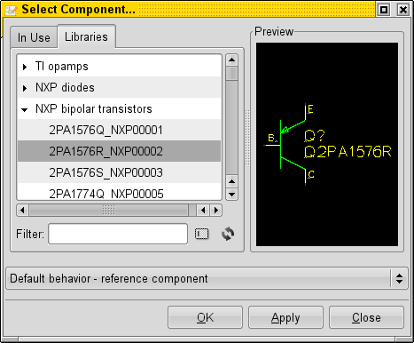

spicelib: modellibrary for gEDA
spicelib is a collector and testing framework to get models from
vendors and create a tested spice model library.
Downloading the spice models
Some vendors provide spicemodels in the internet. Usually you are
allowed to use them but your not allowed to distribute them. Thus
everybody has to maintain his own model library. To avoid the
distribution of the model files itself, the spicelib package
contains all instructions to download and create a local model
library.
The following steps describe howto create a local model
library. All steps are inside the toplevel Makefile.

|
- downloading can be done using wget, curl or
a similar command line program. If the vendor only
provides single modelfiles, it might be necessary to
write a more sophisticated crawler script to download
the models.
- unpack: If the vendor provides zip files or
tar archives this is the step to extract the files out
of it. Sometimes a vendor may even provide zip-files
that contain zips and you have to extract the archives
multiple times.
- checksums: The checksums are created to
make maintainance of the spice library easier. If you
download and extract the spice library archives a second
time, you can easily find out which files have been
changed by the vendor. You can store that file in and
SCM system or create golden checksum files of reviewed
models.
- creating local libraries: The vendor model
files are now in a cluttered temporary storage. There
are several useless files in that storage and some of
the spice files have stupid syntax errors or are
incompatible with your circuit simulator. In this step
the models are moved to a ordered library structure and
the erroneous models can be fixed with patches or other
command line tricks.
- local checksums: The last step is another
set of checksums. This checksums help to detect errors
in the above steps. Example: If you fix a model in the
previous step the checksum will change. After the change
you can manually verify the fix and move the new checksum
to your SCM or golden checksum storage.
|
Connecting the spicelib to libgeda with gedaparts
gedaparts is a python script that connects the spice library to libgeda.

|
The spicelib is connected to gEDA with a scm script. The
script defines how libgeda has to call gedaparts
script. The geda-parts.scm script is located in the
$INSTALLDIR/share/gEDA/gafrc.d/ directory. libgeda
calls all scripts inside that directory at startup.
There are two command to access the spicelib through the geda-parts.scm:
- list command: When calling this command,
gedaparts returns a list off all parts inside a given
library. The list is extracted out of a given indexfiles.
-
part command: When calling this command with
a partname option, gedaparts will lookup that part in
a additionally given library indexfile. Inside the
indexfiles is a variable that defines which symbol
template gets used. The gedapart script combines the
symbol template and a set of variables to a valid gEDA
symbol and returns the symbol to libgeda.
|
|

|
The connected spicelib files can be used with gschem
now.
libgeda loads the libraries at startup and
you'll be able to select the parts from the component
chooser.
|
Tests for the spice library and the spice models
The picture below shows how the current test setup works. The
library tester takes the indexfiles that contain the part
descriptions. The tester walks through the index files an runs
the appropriate test with every part.
The tester creates a summary htmlfile for each library.
Each test template consists of
- a template schematic
- a script that runs all simulations steps (currently written in python)
- a file with circuit simulation commands either for gnucap or ngspice
- a html template file for the test simulation results
The tester first prepares the test schematic with the current
part. It copies all required files to the test directory which is
provided in the head of the library index file. And finally the
tester executes the tester script.

|
The test script runs all commands for one test. e.g. to test a bipolar transistor.
- generate netlist: With the gnetlist call,
gnetlist gets the parts to test from the spicelib
through libgeda and gedaparts. The gnetlist backend
spice-sdb takes the netlist and the attributes of the
test part. It gets the spice model from the spice model
library that is referenced inside the tested part. The
output of gnetlist is a spice netlist.
- run simulation: The test calls the simulator
with provided netlist file and the simulation command
file. The output of the simulation is on or more data files.
- post processing: The test script
postprocesses the simulation data and creates plot
images. As the test script is written in python I can
use numpy and matplotlib (pylab) for the testing and
plotting actions. Several tests are possible:
- has the simulator created data files or did the simulation fail?
- are the simulation results within expected ranges?
e.g. saturation voltage should be positive but not larger than 1.0 voltage
- generate result file: The test result file
contains a summary of the simulations. All plots are
linked together in a html file. Links to the datasheet,
the model files and some additional metadata about the
tested parts are inserted too.
Note: This
file is currently created by the library tester. Thus
it's possible to create that file even if the test script
crashes.
|
All test results and some of the test definitions are linked in
the toplevel file in the
test directory.
Run model tests
There are differnt ways to run the model tests. All test methods
rely on the tester library scripts/testlibrary.py.
Command line usages of the tester
You can use the commandline of the tester to run tests on a single
part or on all parts with a given status.
/spicelib> scripts/testlibrary.py --help
usage is:
-i --index libraryname1 [libraryname2, ..]
-t --test libraryname1 [libraryname2, ..]
-p --part libraryname partname1 [partname2, ..]
-s --status status: check/list only one given status
-c --checksum checksum: check/list only one checksum status
|
use scons system
With scons test you can run tests on all devices automatically.
use the tester gui
When doing manual model testing, it's good to have all
informations about one device on the screen. To run the gui, just
call it with an indexfile on command line:
> ./scripts/testlibrarygui.py indexfiles/national_opamps.index
|

On the left side all devices of the index file are listed.
If
you select one device, then you'll see the model text in the
center text widget.
On the right top side you'll see the
device definition. You can edit that section to modifiy the
definition.
With the buttons and colored status messages you can run model tests.
If the model checksum is not the same as in the golden
checksum files. You can sign the model.
The button test model definition runs the tests with all
simulators for that device. << and >>
will show the next device.
The results of the model test is shown below the simulator. The
view buttons will show the detailed simulation results in a
browser.
With the button good and broken you can give a
manual rating of the model. This will update the fields
model_status_good and model_status_bad in the device
definition.
Development
The development of spicelib is hosted at github: github.com/werner2101/spicelib.
Werner Hoch
Last modified: Sun Mar 24 12:04:17 CET 2013